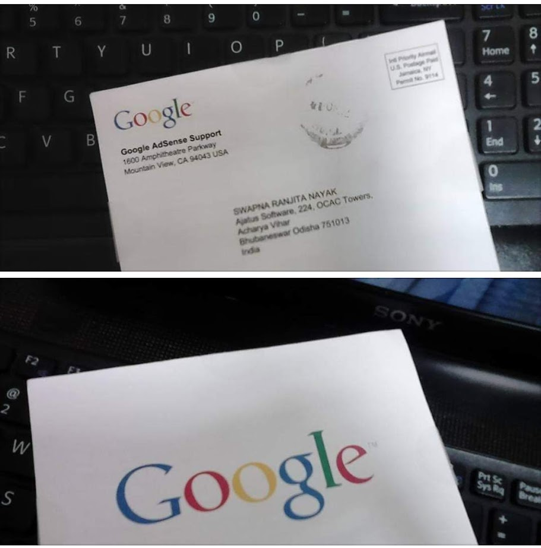
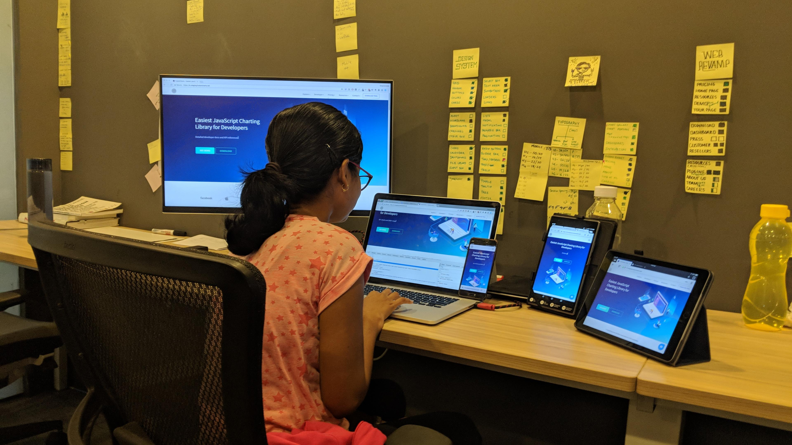
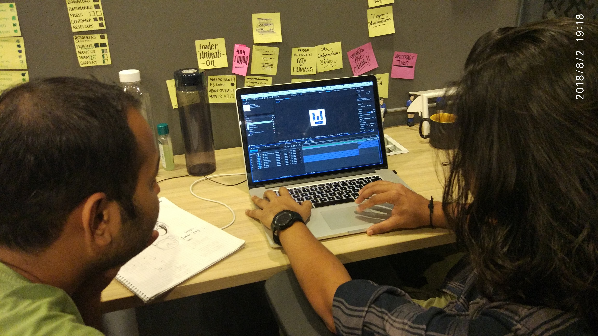
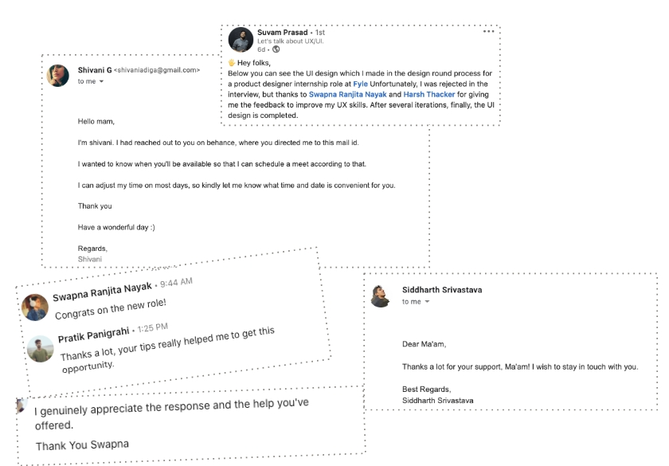

Throughout her career, she took bets with startups in pursuit of learning 😀. While you won't find big company names on her resume, these were worthwhile endeavors that shaped her journey.
How and Why design?
In 2014, intrigued by a $300 AdSense revenue post on Facebook, she dove deep into blogging. She taught herself WordPress, PHP, HTML, and CSS to launch her own blogging website—all during a time when online resources were scarce.

She was overjoyed when she got adsense approval
Dissatisfied with WordPress's free themes, she began experimenting with custom designs in Photoshop. This experimentation sparked her passion for design. She started reading more about designs, on her own.
Cybria Tech
Her professional journey began at Cybria Tech, a startup founded by her collage senior. It delivered software services to businesses. As their solo designer and front-end developer, she crafted and deployed both code and designs for numerous websites.
Muvi - A platform to lunch site like Netflix.
After a year and a half, she joined Exelanz and worked on their product Muvi, which tackled streaming platform challenges in 2015 and is now a market leader. As a movie enthusiast, she found the perfect fit. There, she created a product style guide and delivered custom designs for enterprise clients like Sony and Universal Motion Pictures.
She also actively participated in Google Developer Group Fest events in Bhubaneswar, expanding her knowledge of Design Thinking, Material Design, and Polymer JS.
FusionCharts - Makes data delight.
Juggling both design and coding proved challenging. Seeking to focus solely on design, she relocated to Bangalore, India in 2017 and joined the talented team at FusionCharts—a JS library used by 28,000 companies and 800,000+ developers . Working with an exceptional team, they enhanced conversion rates, designed a new Design system (Published by The Start Up), and improved various touchpoints through website revamp before the company's acquisition.

She was forced for this photo before the new design lunch :P

Team is ideating on FC's branding
Fyle - Makes expense reporting breeze.
Just before COVID, she joined Fyle, an expense management platform for businesses, as a senior designer. Drawing from her previous experience in similar spaces, she thrived there for five years. She helped shape the product from scratch to achieve product-market fit and led major initiatives after the company's pivot to the US market. She built the company's first design organization, became Associate Director, Product Design and maintained zero attrition for 2.5 years. During her time, the company’s business grew from 0 to $2M+ and beyond. (can’t reveal much :P )
During her time at Fyle, she mentored interns who grew into product designer I to II to senior designers and helped other designers and freshers who reached out through LinkedIn/Email/Behance.

Quite small letters to read, but couldn't do enough.
Break and Side Hustle
Currently, she's on an open-ended sabbatical to focus on personal growth after such an insane run. Also on side, she is working on an solving auto mobile space problems on a theme of right to repair.
On portfolio
For this portfolio, I experimented with Framer and Webflow but ultimately decided to code everything from scratch. I loved putting it all together again after so many years.
Wondering why there aren't many photos or online presence of her? She's simply camera-shy, likes to spend free time with family and friends, and writes only when she wants to do.
Growing up, She realised, time and health both are just too precious. So she protect those as far as she can.